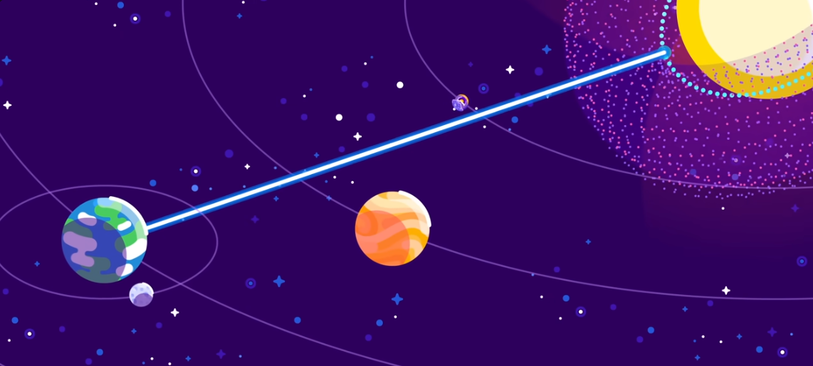

Sommaire :
Description
Un essaim de Dyson est un essemble de satellites qui entoure une étoile pour récupérer son énergie.
Chaque satelitte serait composé d'un simple miroire qui réfléchirait la lumière de l'étoile vers une autre
structure. Cette structure, plus petite, serait en fait un canalisant qui dirigerait la lumière vers une
ferme solaire sur terre ou ailleurs, qui produirait de l'électricité.

Fabrication
Des milliards de satellites seraient nécessaires pour entourer le soleil, et le design devrait être
parfait : le plus simple possible, le plus léger possible, et le plus résistant possible.
Pour construire ces satellites, il faudrait utiliser des ressources extra-terrestres, etc'est vers Mercure
que les yeux se tournent. En effet, Mercure est la planète la plus proche du soleil, et donc la plus
exposé à ses rayons. L'énergie solaire y est donc très abondante, et il y a aussi beaucoup de ressources.
On peut en effet assumer que comme sur terre, on y retrouve du fer, du nickel, du souffre, du carbone, etc...
La construction de l'essaim de Dyson serait entièrement localisée sur Mercure, et les satellites seraient
construit automatiquement par des robots. L'essaim pourrait même allimenter sa propre construction, et augmenter
de façon géométrique.
Réalité
Contrairement à la sphère de Dyson, l'essaim de Dyson est une structure qui pourrait être réalisée.
En effet, les satellites sont des structures simples, et la construction pourrait être automatisée.
Il y a cependant quelques problèmes :
- Mercure est très éloignée de la Terre, et y envoyer les infrastructures nécessaires à la construction
de l'essaim serait très couteux. - L'état actuelle de l'environnement politique mondiale est totalement hostile à un tel projet.
- Nous n'avons pas conscience de l'ensemble des obstacles qui pourraient se présenter.